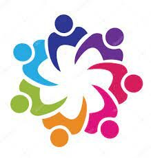

AREMAC'S

PLANNING DE NOS ÉVÉNEMENTS
La page planning indique les événements sur lesquels l’association est présente.
| Date | Lieu | Evenement |
|---|---|---|
| Lundi, 25 avr. 2022 | Lyon |
Visite du centre ELISE Suite à la visite de l'incinérateur le mois dernier, on te propose ce mois-ci de venir visiter le centre ELISE, un centre de recyclage de papier de bureau et déchets des entreprises à Villeurbanne.
|
| 29 avr. – 1 mai 2022 | Bordeaux |
Fête de l'Asperge A découvrir : exposants gastronomiques, shows culinaires, un village développement durable, une omelette géante, des concerts gratuits et bien d’autres activités..
|
| 30 avr. – 1 mai 2022 | Marseille | Thonon Gaming Festival Comment ça tu ne connais pas le Gaming Festival ? C'est THE Festival pour un week-end de gaming intense ! On y sera du 30 Avril au 1 Mai 2022, pour trier les déchets des gamers et du public ! |
| mercredi, 4 mai 2022 | Marseille | Apéro AREMACS Marseille
Apéro à thème Cité de La Peur !!! Tu as envie de découvrir l'association et son équipe ?! C'est THE moment convivial pour que nos bénévoles se retrouvent autour d'une petite bière, et pour qu'on vous présente les évènements du mois ! |
| vendredi, 6 mai 2022 | Bordeaux | Nuits Sonores LES NUITS SONORES SONT DE RETOUUUUUR ! Ce festival de musique électronique et indépendantes de 5 jours sur notre belle ville de Bordeaux ! On sera présent.es sur l'évènement du 25 au 29 Mai 2022 pour trier les déchets, sensibiliser les gens, et écouter du bon son ! |
| 7 – 8 mai 2022 | Paris | Montage We Love Green LE BOIS DE VINCENNES Plaine de la Belle Etoile Accès par la Route Dauphiné via L’Esplanade Saint Louis Bois de Vincennes, 75012 Paris |